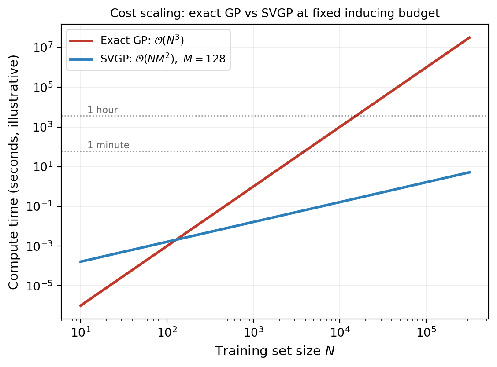
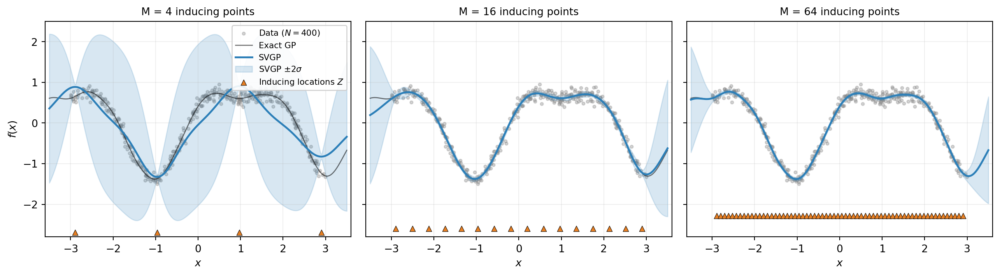
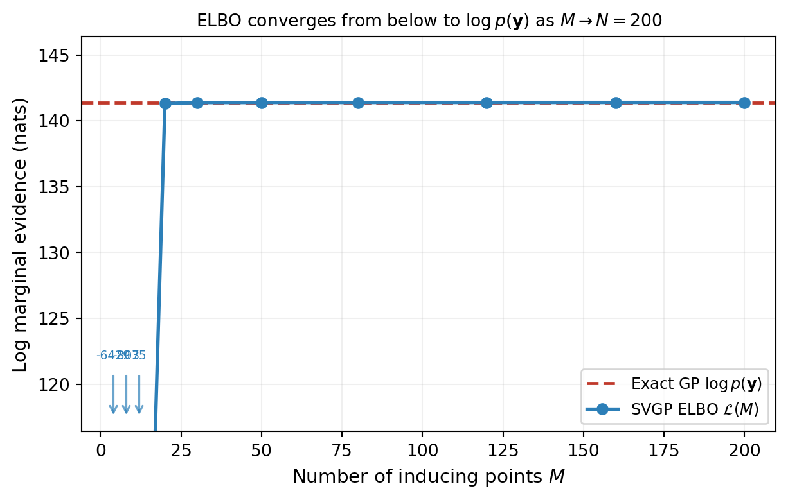
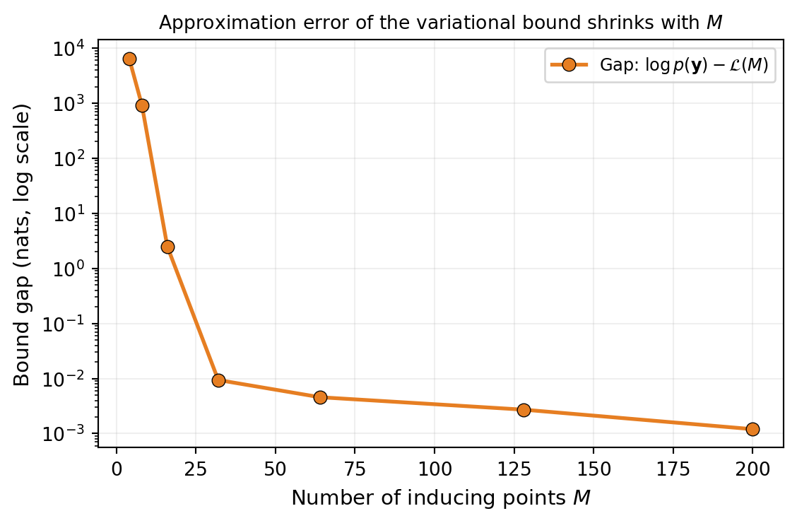

Sparse Variational Gaussian Processes
PyApprox Tutorial Library
Why exact GPs do not scale, how inducing points compress the posterior, and how the variational lower bound (ELBO) makes large-scale GP inference tractable.
TipDownload Notebook
Learning Objectives
After completing this tutorial, you will be able to:
- Explain why exact GP inference does not scale beyond a few thousand training points
- Describe the role of inducing points as a compressed summary of the GP at \(M\) chosen locations
- State the Evidence Lower Bound (ELBO) and explain why maximizing it approximates the exact posterior
- Recognize that the ELBO is a lower bound on the log marginal likelihood and approaches it as \(M \to N\)
- Understand why every SVGP optimization involves three parameter groups: kernel, inducing locations, variational distribution
Prerequisites
Complete Building a Gaussian Process Surrogate before this tutorial. It introduces the kernel, the GP prior and posterior, and the maximum marginal likelihood fit. This tutorial picks up where that one leaves off and asks: what do we do when \(N\) becomes too large for the exact recipe?
The Scaling Wall
The exact GP posterior derived in the prerequisite tutorial requires inverting a single \(N \times N\) matrix:
\[ \mu^*(\mathbf{x}^*) = \mathbf{k}^{*\top}(K + \sigma^2 I)^{-1}\mathbf{y}, \qquad \sigma^{*2}(\mathbf{x}^*) = k(\mathbf{x}^*, \mathbf{x}^*) - \mathbf{k}^{*\top}(K + \sigma^2 I)^{-1} \mathbf{k}^*. \]
Cholesky factorization of \(K + \sigma^2 I\) costs \(\mathcal{O}(N^3)\) time and \(\mathcal{O}(N^2)\) memory. This is fine for \(N \lesssim 5\,000\) on a laptop, painful at \(10\,000\), and infeasible past \(10^5\).
The cubic wall has two distinct causes worth separating. The first is the linear-algebra cost of factoring an \(N \times N\) matrix — this is what the figure shows. The second is more subtle: the exact GP must touch every training point at every prediction. The cost of evaluating the kernel matrix between \(N\) training points and any test set is \(\mathcal{O}(N)\) per test point. Together these two facts mean the exact GP cannot be made cheap without changing what the GP is conditioning on.
This is the question SVGP answers.
The Inducing-Point Idea
Suppose we introduce \(M \ll N\) extra locations \(Z = \{\mathbf{z}_1, \ldots, \mathbf{z}_M\}\) in the input space, called inducing inputs. The function values of the GP at those locations form a vector \[ \mathbf{u} = [f(\mathbf{z}_1), \ldots, f(\mathbf{z}_M)]^{\top} \in \mathbb{R}^M. \]
Because \(f\) is a GP, the prior over \(\mathbf{u}\) is itself Gaussian: \[ p(\mathbf{u}) = \mathcal{N}(\mathbf{0}, K_{uu}), \qquad (K_{uu})_{ij} = k(\mathbf{z}_i, \mathbf{z}_j). \]
The conditional distribution of any GP value at any other location given \(\mathbf{u}\) is also Gaussian and follows from the standard Gaussian conditioning rules. In particular, the GP value at a test point \(\mathbf{x}^*\) given \(\mathbf{u}\) is \[ p(f^* \mid \mathbf{u}) = \mathcal{N}\!\left(K_{*u} K_{uu}^{-1} \mathbf{u},\; k_{**} - K_{*u} K_{uu}^{-1} K_{u*}\right). \]
The intuition is geometric: \(\mathbf{u}\) is a summary of the GP at \(M\) chosen locations. Once we know what the function does at those \(M\) inducing locations, the prior covariance structure tells us what to expect everywhere else — with some residual uncertainty captured by the second term above. If \(M\) is large enough and the inducing locations are well-chosen, this summary loses very little compared to knowing the function at all \(N\) training points.

The figure shows that inducing points act as a bottleneck: data information must flow through the \(M\)-dimensional summary \(\mathbf{u}\) before reaching the predictive distribution. With too few inducing points the bottleneck loses information and the fit is poor; with enough, no information is lost.
The Posterior Over \(\mathbf{u}\)
What we actually want is the posterior over \(\mathbf{u}\) given the training data: \[ p(\mathbf{u} \mid \mathbf{y}). \]
This is intractable in general — it requires integrating out the function values at all training inputs, which is exactly the cost we are trying to avoid. The key SVGP idea is to approximate this posterior by a tractable Gaussian \[ q(\mathbf{u}) = \mathcal{N}(\mathbf{m}, S), \] with \(\mathbf{m} \in \mathbb{R}^M\) and \(S \in \mathbb{R}^{M \times M}\) as variational parameters chosen to make \(q(\mathbf{u})\) close to the true \(p(\mathbf{u} \mid \mathbf{y})\).
This is variational inference: instead of computing the posterior, we pick a tractable family and optimize within it. The same idea was introduced in Approximating the Posterior: Introduction to Variational Inference for general Bayesian problems; SVGP is a specific application of variational inference to GP regression.
Once we have \(q(\mathbf{u})\), the SVGP predictive distribution at a test point becomes \[ q(f^*) = \int p(f^* \mid \mathbf{u})\, q(\mathbf{u})\, d\mathbf{u}. \]
Both factors are Gaussian, so the integral is closed-form and gives a Gaussian: \[ \mu^*_{\text{SVGP}}(\mathbf{x}^*) = K_{*u} K_{uu}^{-1} \mathbf{m}, \] \[ \sigma^{*2}_{\text{SVGP}}(\mathbf{x}^*) = k_{**} - K_{*u} K_{uu}^{-1} K_{u*} + K_{*u} K_{uu}^{-1} S K_{uu}^{-1} K_{u*}. \]
Compare to the exact GP predictive equations: the structure is the same, but the data-dependent quantities \((K + \sigma^2 I)^{-1} \mathbf{y}\) have been replaced by the variational mean \(\mathbf{m}\), and the posterior covariance reduction has been replaced by a combination of the prior conditional covariance and the variational covariance \(S\). Cost is now \(\mathcal{O}(NM^2)\) for one optimization pass and \(\mathcal{O}(M^2)\) per test point — the linear scaling we wanted.
But how do we choose \(\mathbf{m}\) and \(S\)? That is what the ELBO is for.
The Variational Objective: ELBO
The Evidence Lower Bound (ELBO) is a quantity that simultaneously (i) measures how well \(q(\mathbf{u})\) approximates the true posterior, and (ii) measures how well the SVGP fits the data. Maximizing it over the variational parameters \((\mathbf{m}, S)\) and the kernel hyperparameters jointly gives the SVGP fit.
The ELBO has the form \[ \mathcal{L}(\mathbf{m}, S, \boldsymbol{\theta}) \;=\; \underbrace{\sum_{i=1}^{N} \mathbb{E}_{q(f_i)}\!\left[\log p(y_i \mid f_i)\right]}_{\text{data fit}} \;-\; \underbrace{\mathrm{KL}\!\left[q(\mathbf{u}) \,\|\, p(\mathbf{u})\right]}_{\text{regularizer}}. \]
The data-fit term measures how well the SVGP predictive explains each observation. With a Gaussian likelihood, each one-dimensional expectation has a closed form. Crucially, the sum decomposes across data points, which means we can mini-batch: estimate the data-fit term by averaging over a random subset of training points and rescaling. This is what enables SVGP to scale to truly massive datasets where even a single pass over all \(N\) points would be expensive.
The KL term is a closed-form Gaussian-Gaussian divergence that penalizes \(q(\mathbf{u})\) for departing from the prior \(p(\mathbf{u}) = \mathcal{N}(\mathbf{0}, K_{uu})\). Without it, the variational distribution could collapse to a degenerate solution that fits the training data perfectly without generalizing.
The ELBO has one more property that earns it its name. For any choice of variational parameters, \[ \mathcal{L}(\mathbf{m}, S, \boldsymbol{\theta}) \;\le\; \log p(\mathbf{y} \mid \mathbf{X}, \boldsymbol{\theta}), \]
with equality if and only if \(q(\mathbf{u}) = p(\mathbf{u} \mid \mathbf{y}, \boldsymbol{\theta})\). The ELBO is a lower bound on the exact log marginal likelihood — the same quantity used to fit hyperparameters in an exact GP. So maximizing the ELBO simultaneously fits the variational posterior and selects kernel hyperparameters by the same Occam-balance principle as the exact GP.

The bound being tight at \(M = N\) is not a coincidence: when there are as many inducing points as training points and the inducing locations coincide with the training inputs, the variational posterior at its optimum recovers the exact posterior. SVGP at \(M = N\) is the same as exact GP — just expressed in different parameters.

What Gets Learned
An SVGP fit jointly optimizes three groups of parameters:
- Kernel hyperparameters \(\boldsymbol{\theta}\) — length scales, signal variance, noise variance. Same as in an exact GP.
- Inducing locations \(Z\) — treated as free parameters and moved by the optimizer to wherever they are most informative. The user does not place them by hand; they relocate during optimization.
- Variational parameters \((\mathbf{m}, S)\) — the mean and covariance of \(q(\mathbf{u})\). The covariance \(S\) is parameterized by a Cholesky factor \(S = LL^{\top}\) to enforce positive-definiteness during optimization.
In a typical implementation, all three groups are learned together by gradient descent on the negative ELBO. The inducing locations \(Z\) are particularly interesting: they tend to migrate to data-rich regions and to the boundaries of the input domain where the GP needs the most resolving power.
Choosing \(M\) in Practice
The number of inducing points \(M\) is the central knob in any SVGP application. The trade-off is:
- Larger \(M\): better approximation, predictive distribution closer to the exact GP, larger memory and per-iteration cost (quadratic in \(M\)).
- Smaller \(M\): cheaper, but may not capture the function well in regions of complex behaviour.
A practical heuristic: monitor the ELBO during training and watch where increasing \(M\) no longer materially improves it. If the ELBO at \(M = 256\) is essentially the same as at \(M = 128\), the smaller value is enough. For comparison purposes, fitting an exact GP on a thinned subset of the data (e.g., \(N = 1\,000\)) gives a benchmark for the marginal-likelihood scale.
When SVGP Does Not Help
SVGP is valuable when \(N\) is large enough that exact GP becomes unaffordable, but not before. For \(N \lesssim 5\,000\) on most modern laptops, the exact GP is faster and gives a tighter posterior. The cost of the SVGP optimization (typically thousands of gradient steps) outweighs the cost of a single Cholesky factorization in this regime.
SVGP also assumes the function being approximated has structure that can be summarized by \(M\) inducing points. For functions that are highly oscillatory across the entire input space, the inducing summary becomes a bottleneck no matter where the points are placed. In those cases, SVGP may need \(M\) comparable to \(N\) to be accurate, defeating the purpose.
Why This Matters for Deep Gaussian Processes
The SVGP formalism is the foundation for deep Gaussian processes. A deep GP is built by stacking SVGP layers: the inducing-point summary \(\mathbf{u}_\ell\) for layer \(\ell\) becomes the building block of a more expressive model whose output is no longer Gaussian. The variational lower bound generalizes: it sums KL terms over layers and propagates the data-fit term through stacked predictive distributions. None of this works without inducing points, because exact GP inference at every layer of a deep model is doubly intractable.
That structure is the subject of the next tutorial in this sequence.
Key Takeaways
- Exact GP inference is \(\mathcal{O}(N^3)\) because of the kernel matrix factorization; this becomes a wall around \(N \sim 10^4\).
- Inducing points \(Z\) summarize the GP at \(M \ll N\) chosen locations, with the function values \(\mathbf{u}\) at those locations acting as a sufficient statistic.
- The variational distribution \(q(\mathbf{u}) = \mathcal{N}(\mathbf{m}, S)\) approximates the intractable true posterior \(p(\mathbf{u} \mid \mathbf{y})\), and is fit by maximizing the ELBO.
- The ELBO has a data-fit term (sum over training points, mini-batchable) and a KL regularizer (closed form, single matrix).
- The ELBO is a lower bound on the exact log marginal likelihood, with equality at \(M = N\) and the optimal variational parameters.
- Three parameter groups are learned jointly: kernel hyperparameters, inducing locations, and variational mean/covariance.
- The cost is \(\mathcal{O}(N M^2)\) per gradient step — linear in \(N\) at fixed \(M\), enabling fits to datasets where exact GP is impossible.
Exercises
The exact GP posterior at \(M = N\) inducing points equals the SVGP posterior at the variational optimum. Convince yourself by sketch what happens to the \(K_{*u} K_{uu}^{-1} \mathbf{m}\) term in the predictive mean when \(Z\) coincides with the training inputs and \(\mathbf{m}\) takes the optimal value derived from the data.
Why is it important that the data-fit term in the ELBO decomposes as a sum over training points? What changes about the optimization if it does not?
Consider a 1D regression problem on the interval \([0, 10]\) with \(N = 10\,000\) training points concentrated in \([2, 4]\) and uniformly distributed elsewhere. Where should the inducing points end up after optimization? Why?
The KL term penalizes departures of \(q(\mathbf{u})\) from the prior. What happens to the SVGP fit if we artificially scale this term down by a factor of 100? What happens if we scale it up by a factor of 100?
Next Steps
- Deep Gaussian Processes: Concept (in progress) — Stacking SVGP layers to build hierarchical models with non-Gaussian predictive distributions.
- Whitened Parameterization of the Variational Distribution (in progress) — A reformulation of the SVGP variational problem that makes the optimizer converge dramatically faster.
- Building a Gaussian Process Surrogate — The exact GP workflow, for comparison.
- Approximating the Posterior: Introduction to Variational Inference — The general variational framework that SVGP specializes.